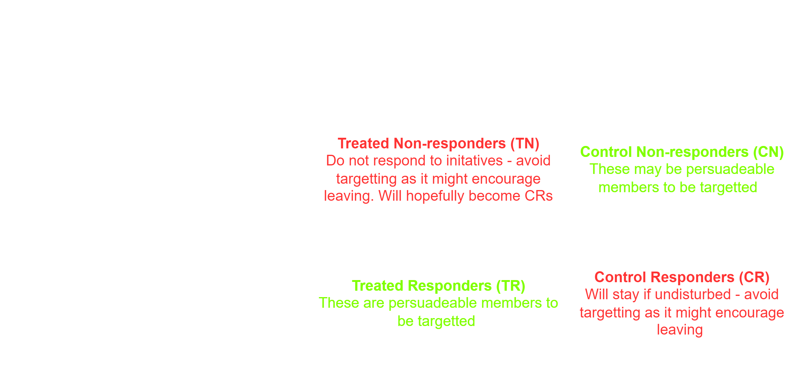

Time-To-Event Prediction
For me, both life and career opportunties have been the driving force behind my all of my career decisions. I've found over the years that I value growth and progression so much so that they are influential factors in assessing your current state. However, as is the case with most big decisions, there are many factors to consider.
For example, pursuit of a career in data science from an engineering role was the first reason reason I decided to leave my graduate role, however, this is just one of many reasons why people leave a job.
However, in general, this of course can be a nightmare for buisnesses in sectors with high turnover rates, so knowing when employees are likely to leave is an important decision-making tool for resourcing. With the field of Survival Analysis, we're able to predict the time at which we expect employees to leave based off historic company data.
Data set
Here, we'll look at an HR data to make inferences about employees propensity to leave. The linear relationship to between the features is shown below in the correlation matrix:
You can see that there is relatively little correlation between our target variable (left) as seen the second column of the matrix. Let's visualise some of the factors why somebody might leave a job that describe employees
leaving their job.
Firstly, we can see that the data set consists of an even split between employees who have left and those who are stil employed. If we are to create any machine learning model using this data set, thankfully, this even balance will avoid any prediction baises towards the majority class.
It's also clear that there is quite a wide range of employees belonging to different sectors within the data set. We also immediately make inferences about the different professions that have a higher turnover rates than other. It is unknown if the data is sampled over a continuous and uninterupted time period, but assuming that this is the case, it makes sense that Building looks to have a higher turnover rate compared to tertiary industries such as IT.
So, can we predict when IT employees will leave compared to those in construction/building? Amazingly, the answer is yes thanks to Survival Analysis.
Below we see the estimated survival functions constructed from employees from the two groups of interest - IT (red) and Building (Blue). As expected, we can safely say that those who get into the building/construction sector have a lower probability of remaining employed for all periods of time compared to those in the IT sector. Not only can we give probability of remaining in employment, we provide a confidence estimate no how sure we are for each probability. This is shown on the survival curve as the shaded area above and below the line.
It's clear to see how tools like this can be invaluable to retention programmes to effectively target higher flight risk groups as they are able to see both when a specific group is likely to leave, as well as the how likely they are to leave. Applying judgement or assigning a threshold probability value are both methods which can trigger initiation of retention schemes.
However, how do we know we are targeting the correct group?
An alternative and more resource effective approach would be identification of employee groups where the retention program is likley to have success. If we look at the matrix of outcomes that result application of the retention programme and the employee turnover, there are 4 distinct classes we can identify - green indicating an actionable group, red indicating a group to leave alone:

- Control Non-responders (CN) and Treated Responders (TR) are both groups of interest to retention schemes as there is potential for success in retention efforts. For CN members, although they left the company, we don't know if retention would've had an effect so there is potential uplift for this group. Additionally, for TR members, we know the success outcome of the retention scheme so uplift is guaranteed for this category.
- Treated Non-responders (TN) and Control Responders (CR) are groups where retention efforts are futile. TN are treated with initatives yet still leave the company, but potentially might have remained if undisturbed by retention efforts. CRs remain with the company but only when there is no interference from retention. Hence the aim should be leave these members alone and the hope that TN members will become CR members through a Do-Not-Disturb policy.
So to determine which method creates better uplift, we can calculate the uplift score as shown below:
Uplift Score = P(CN)/P(C) + P(TR)/P(T) - P(TN)/P(T) - P(CR)/P(C)
By creating an xgboost model to compare the performance of an Employee Turnover Predicition (ETP) model and a Employee Turnover Uplift (ETU) model, we will be able to see the effectiveness of each model in solving employee turnover problem.
Due to the evenly balanced data set, we can assess the predictive performance of each model's predicitions using accuracy. For evaluating the prescriptive performance of the uplift model, we can use what's known as a Qini curve to tell us how effective each model is at preventing employee turnover.
- The grey line corresponds to randomly targeting employees with retention treatment, which we can see has the effect of decreasing the uplift i.e. as more employees are targetted, the uplift linearly decreases until a value of 0.4 is reached.
- However, interestingly, the results suggest that if we use a retention ploicy that targets members who are more than 50% likely to leave, the effetiveness/success of the retention strategy in making them stay is worse than if we randomly select members for the retention initative. This could potentially be due to this model selecting features that are descriptive of Treated Non-responders, which we know from the confusion matrix should be left alone and therefore explains the unsuccessful retention results from the low uplift.
- On the other hand, the ETU model is effective in retaining employees as shown by the consistently high uplift results. As more employees are targetted, greater uplift results which is as expected in many ways since the uplift model is much more prescriptive than the binary classification algorithm. This means that we are now leaving the do-not-disturb employees alone and targetting the treated responders and the control non-responders.
In summary, both survival analysis and uplift modelling allow amazing efficiencies and insights into better retaining employees at in a role. Knowing when someone is likely to resign as well as the who is most likely to resign gives us better tools in retaining employees who are of course the most valuable part of any company!